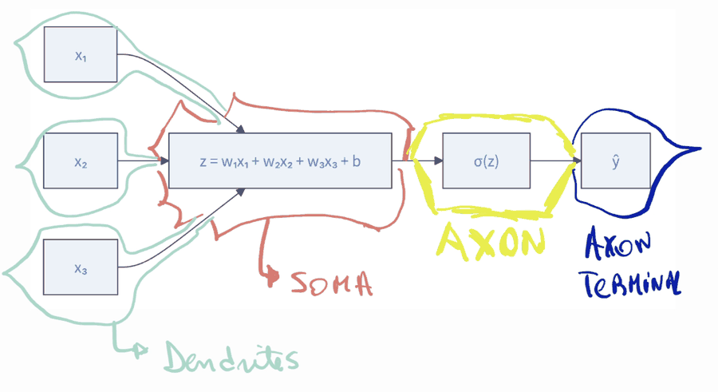
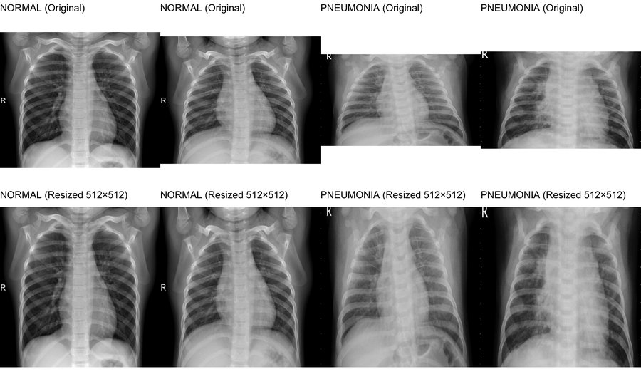
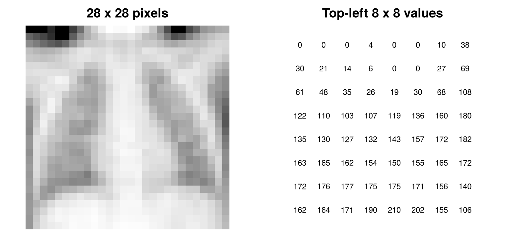
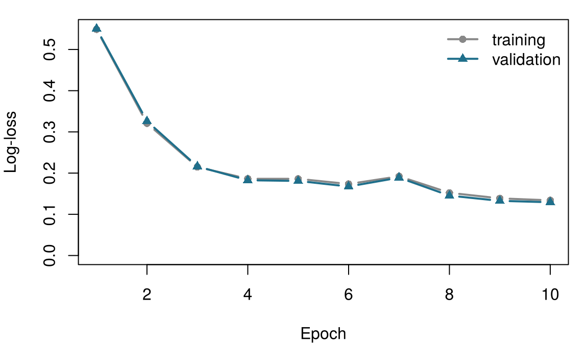

7 Neural networks and deep learning
An artificial neuron is loosely modelled on a nerve cell. Match each part of a biological neuron with the piece of an artificial neuron that plays a similar role. Take your best guess — the chapter explains each one.
| Part of a nerve cell | Counterpart in an artificial neuron |
|---|---|
| Dendrites, which receive signals from other cells | |
| The strength of each synapse | |
| The cell body (soma), which adds up excitatory and inhibitory signals | |
| The axon initial segment, which fires only above a threshold | |
| The axon terminals, which pass the signal on |
How to use this chapter
This chapter borrows a few ideas from earlier ones:
- A model is a simplified representation of reality, \(y = f(\mathbf{x}) + \varepsilon\), and learning means estimating \(f\) from data (Definition 1.3). Each row of a dataset is an instance with features \(\mathbf{x}_i\) and an outcome \(y_i\) (Definition 1.7).
- Models are fitted on a training set and judged on a test set they never saw (Section 1.8); a model that is too flexible overfits (Definition 1.8). Choices made during training use a separate validation set (Chapter 3).
- A loss function \(\mathcal{L}\) measures how wrong a model’s predictions are (Chapter 3).
- Logistic regression turns a weighted sum into a probability with the logistic (sigmoid) function \(\sigma(z) = 1/(1+e^{-z})\). A classifier’s errors are summarised in a confusion matrix, from which come sensitivity (the share of sick people it flags) and specificity (the share of healthy people it clears); a threshold \(t\) turns a probability into a decision (Chapter 5).
- The learning rate \(\eta\) controls how big a step a learning algorithm takes (Chapter 6, boosting).
| Example | Who or what | Outcome | Faces you will meet |
|---|---|---|---|
| 1 Ward 7 ICU | 1 250 ICU patients in 4 hospitals | change in creatinine over 48 h (acute kidney injury if ≥ 0.3 mg/dL) | Aoife (71, sepsis, borderline risk), Tomás (54, low risk), Priya (38, high risk); Dr Emma Walsh; Seán, the pharmacist |
| 2 ONCO-1 trial | 1 000 patients randomised to chemotherapy or not | tumour shrinkage (%) | patients #0042 and #0917 |
| 3 HomeBeat | 500 people wearing a smartwatch at home | stress score, deterioration event | Lena |
| 4 CellWorks | 420 production batches of a cell therapy | potency score | batch CW-118 |
All four datasets are simulated and can be downloaded from the data appendix. The full introduction is in Section 1.1.
This chapter also uses real images: paediatric chest X-rays from the public PneumoniaMNIST collection, described in the data appendix.
This chapter goes from a single nerve cell to a network that reads chest X-rays. It has twelve sections and a Lab, seven quick checks, three “Try it” widgets, a challenge and three coding missions in R and Python. Allow about two hours. Nothing heavy runs in your browser: the convolutional network was trained once, and its results are loaded from files.
| Symbol | Meaning | Section |
|---|---|---|
| \(x_1, \dots, x_p\); \(\mathbf{x}\) | inputs of a neuron (the features) | Section 7.2 |
| \(w_1, \dots, w_p\); \(\mathbf{w}\) | weights of a neuron | Section 7.2 |
| \(b\) | bias of a neuron | Section 7.2 |
| \(z = \mathbf{w}^{\top}\mathbf{x} + b\) | weighted sum (pre-activation) | Section 7.2 |
| \(g(\cdot)\) | activation function | Section 7.2 |
| \(\sigma(z)\) | logistic (sigmoid) function | Section 7.2 |
| \(\mathcal{L}\) | loss function | Section 7.3 |
| \(\eta\) | learning rate | Section 7.3 |
| \(\mathbf{W}^{(l)}\), \(\mathbf{b}^{(l)}\) | weight matrix and bias vector of layer \(l\) | Section 7.4 |
| \(\mathbf{h}^{(l)}\) | hidden representation (output) of layer \(l\) | Section 7.4 |
The full list is on the notation page. Neural-network weights are written \(w\) and \(\mathbf{W}\); the coefficients of statistical models keep the letter \(\beta\).
7.1 From brains to artificial neurons
Artificial neural networks began as an attempt to capture, in a very simplified mathematical form, how nerve cells compute. This idea is sometimes called neuromorphism: representing computation with units loosely inspired by the brain, where “neurons” receive signals, combine them and pass on a response, and “synapses” decide how strongly each signal counts. The goal was never to copy biology faithfully — biological systems are far too complex for that — but to borrow its ability to detect patterns, integrate evidence and generalise (Mead 1990).
Neurons were first described in detail by the Spanish histologist Santiago Ramón y Cajal, whose drawings showed that the nervous system is made of separate cells connected at contact points, and who is regarded as a founder of modern neuroscience (Ramón y Cajal 1909). Although there are many types of neuron, a “canonical” one has the parts sketched in Figure 7.1.

- Dendrites, the input tree. Branched projections that receive signals. A neuron typically receives thousands of synaptic inputs across its dendrites and cell body. They arrive as excitatory postsynaptic potentials, which push the membrane voltage up, and inhibitory ones, which push it down.
- Synapses, the weighted connections. Each contact point between two neurons is a synapse. Synapses differ in strength, and their strength changes with use. This plasticity is the biological basis of learning and memory.
- The soma, the integrator. The cell body sums the incoming excitatory and inhibitory potentials — in effect a biophysical weighted sum, shaped by the electrical properties of the membrane and the shape of the dendrites.
- The axon initial segment, the decision point. At the base of the axon, densely packed voltage-gated sodium channels decide whether to fire. If the summed membrane potential crosses a threshold (typically around −55 mV), a rapid depolarisation — the action potential, or spike — begins.
- The axon and its terminals, the output cable. The spike travels along the axon, often insulated by myelin that speeds conduction. At the terminals it releases neurotransmitters that influence the next cells.
In short, a nerve cell receives many signals, weights and sums them, fires if the sum crosses a threshold, and passes the result on (Kandel et al. 2021). Keep these four verbs in mind: the artificial neuron keeps exactly these and drops almost everything else.
7.2 The artificial neuron
In 1943 Warren McCulloch and Walter Pitts proposed a mathematical neuron that adds up binary inputs and fires when the sum crosses a threshold (McCulloch and Pitts 1943). In 1958 Frank Rosenblatt added what was missing: weights that are learned from examples. He called his machine the perceptron (Rosenblatt 1958).
Definition 7.1 (Artificial neuron (perceptron)) An artificial neuron receives numerical inputs \(x_1, \dots, x_p\), multiplies each by a weight \(w_j\), adds a bias \(b\), and passes the weighted sum \[ z = w_1 x_1 + w_2 x_2 + \cdots + w_p x_p + b = \mathbf{w}^{\top}\mathbf{x} + b \qquad(7.1)\] through an activation function \(g\), giving its output \(\hat y = g(z)\). The weights and the bias are the neuron’s parameters: they are learned from data. Rosenblatt’s original perceptron used a step activation.
The weights say how much each input matters, and in which direction: a large positive weight pushes the output up, a negative one pushes it down, a weight near zero means the input is ignored. The bias shifts the point at which the neuron “fires”, whatever the inputs; it plays a role loosely similar to the firing threshold of a nerve cell.
Definition 7.2 (Activation function) An activation function \(g\) turns the weighted sum \(z\) into the neuron’s output. Common choices are the step function, \(g(z) = 1\) if \(z \ge 0\) and \(0\) otherwise (Rosenblatt’s perceptron); the logistic (sigmoid) function, \(g(z) = \sigma(z) = 1/(1+e^{-z})\), which gives a number between 0 and 1; and the rectified linear unit (ReLU), \(g(z) = \max(0, z)\), which passes positive values unchanged and sets negative ones to zero and is the default inside modern networks (Nair and Hinton 2010).
Figure 7.2 draws a neuron with three inputs.
Figure 7.3 overlays the biological picture on the artificial one: the inputs arrive through the “dendrites”, the weighted sum is the “soma”, the activation plays the role of the axon deciding whether to fire, and the output leaves through the “axon terminal”.

The analogy is useful for remembering the parts, but it is loose. Real neurons communicate in spikes whose timing carries information; their dendrites compute locally, not just add; neuromodulators such as dopamine change how whole circuits respond; and synapses change by biological rules that look nothing like the algorithm that trains artificial networks. An artificial neuron is a weighted sum followed by a simple function. Its power comes from connecting many of them and from learning the weights, not from resembling a brain.
A colleague says: “Neural networks work so well because they copy how the brain works.” What is the best reply?
7.2.1 One neuron with a sigmoid is logistic regression
Choose the sigmoid as activation and look at Equation 7.1 again: \[ \hat y = \sigma(w_1 x_1 + \cdots + w_p x_p + b) = \frac{1}{1 + e^{-(\mathbf{w}^{\top}\mathbf{x} + b)}} . \] This is exactly the logistic regression model of Chapter 5, \(P(y = 1 \mid \mathbf{x}) = \sigma(\beta_0 + \beta_1 x_1 + \cdots + \beta_p x_p)\), with the weights playing the role of the coefficients (\(w_j = \beta_j\)) and the bias the role of the intercept (\(b = \beta_0\)). The weighted sum \(z\) is the log-odds, and the output is a probability. A single sigmoid neuron is logistic regression: everything you learned about reading odds ratios, choosing thresholds and checking calibration applies to it.
Take Aoife Byrne, 71, admitted to Ward 7 with sepsis, whose risk of acute kidney injury (AKI) the team weighed in Chapter 1. The headline logistic regression of Chapter 5 predicts AKI (a rise in creatinine of at least 0.3 mg/dL in 48 hours (Kidney Disease: Improving Global Outcomes (KDIGO) Acute Kidney Injury Work Group 2012)) from five admission features, fitted to the 1 000 training patients of the shared split. Its intercept is −1.1705 and its coefficients are 0.4031 per SOFA point (Vincent et al. 1996), 0.2968 per mmol/L of lactate, −0.0358 per mmHg of lowest mean arterial pressure, 2.3413 per mg/dL of baseline creatinine and −2.6425 per unit of protocol adherence (a proportion from 0 to 1). Read as a neuron, these are five weights \(w_1, \dots, w_5\) and a bias \(b\). Aoife has SOFA 6, lactate 2.1 mmol/L, lowest MAP 66 mmHg, baseline creatinine 1.0 mg/dL and protocol adherence 0.72. Compute her neuron’s output yourself.
Aoife’s neuron. The weighted sum z is already computed. Fill in the blank with the sigmoid activation, so that p is Aoife’s estimated probability of AKI.
The sigmoid of z is 1 / (1 + exp(-z)).
p <- 1 / (1 + exp(-z))The sigmoid of z is 1 / (1 + np.exp(-z)).
p = 1 / (1 + np.exp(-z))The neuron’s output, 0.486, is Aoife’s risk from Chapter 5 (0.49), because the neuron is that model: same inputs, same weights, same sigmoid.
Geometrically, a neuron draws a straight boundary. The points where \(z = 0\) — where the sigmoid output is exactly 0.5 — satisfy \(\mathbf{w}^{\top}\mathbf{x} + b = 0\), which is a line in two dimensions, a plane in three and a hyperplane in more. Every patient on one side gets a probability above 0.5, every patient on the other side below. Try it.
Perceptron playground. Each dot is one of the 1 250 Ward 7 patients, coloured by whether AKI occurred. To fit on a screen, this neuron has only two inputs, SOFA and lactate (a teaching model, not the five-feature model above). The two features are standardised (0 = the average patient, 1 = one standard deviation above it). Move the weights and the bias: the shading is the neuron’s output, the black line is its boundary \(z = 0\). The log-loss measures how wrong the probabilities are (lower is better; guessing 0.5 for everyone gives 0.693). Target: on the Ward 7 data, with the sigmoid, get the log-loss below 0.57. Then switch to the second dataset, where the risk depends on a combination of the two features, and try to find any line that works.
Orange crosses: AKI (or event) occurred; grey circles: it did not.
On Ward 7 a straight boundary does a reasonable job: higher SOFA and higher lactate both push the risk up, and the best line trades them off. On the second dataset no line does better than guessing: with the sigmoid the log-loss never drops below about 0.69, the value for answering 0.5 for everyone, whatever weights you choose. (A line can carve off one corner and get about two thirds of the patients right, but the true pattern would get 0.89 right.) The pattern there is an interaction: the risk is high when both features are high or both are low. In 1969 Marvin Minsky and Seymour Papert showed formally that a single perceptron cannot represent patterns of this kind, the simplest being the “exclusive or” (XOR) (Minsky and Papert 1969); their analysis contributed to a long pause in neural-network research. The way out — layers of neurons — is the subject of Section 7.4. First, though, we need to see how a neuron finds its weights by itself.
A neuron has a sigmoid activation and two inputs, age and lactate. After training, \(w_{\text{lactate}} = 0.47\). What does this weight mean?
7.3 How a network learns: loss and gradient descent
Every method in this book runs the same learning loop: guess with the current settings, mark the guess by measuring how wrong it is, adjust the settings to make it less wrong, and repeat (Definition 1.6). You ran it by hand with the sliders above. A computer runs it with two ingredients: a loss function to do the marking and gradient descent to do the adjusting.
Marking. For a yes/no outcome the usual loss is the log-loss, also called binary cross-entropy: \[ \mathcal{L}(\mathbf{w}, b) = -\frac{1}{n} \sum_{i=1}^{n} \Big[ y_i \log \hat p_i + (1 - y_i) \log (1 - \hat p_i) \Big], \qquad(7.2)\] where \(\hat p_i\) is the neuron’s output for patient \(i\). A confident correct prediction costs almost nothing; a confident wrong one (\(\hat p_i\) near 0 for a patient who did develop AKI) costs a great deal. Minimising Equation 7.2 is the same as maximising the likelihood of Chapter 5. For a numerical outcome the usual loss is the mean squared error.
Adjusting. The loss depends on the weights. Imagine it as a landscape: each position is a choice of weights, and the height is the loss. We want the lowest valley. Standing somewhere on the slope, the gradient — the vector of partial derivatives \(\partial \mathcal{L} / \partial w_j\) — points uphill, in the direction of steepest increase. So we take a small step the other way.
Definition 7.3 (Gradient descent) Gradient descent minimises a loss by repeating the update \[ w_j \leftarrow w_j - \eta \, \frac{\partial \mathcal{L}}{\partial w_j} \quad \text{for every weight } w_j \text{ (and likewise for the bias)}, \qquad(7.3)\] where the learning rate \(\eta > 0\) sets the size of each step. Too small a learning rate makes progress painfully slow; too large a one overshoots the valley and can bounce around or diverge (Goodfellow, Bengio, and Courville 2016).
For a single sigmoid neuron with the log-loss the gradient has a remarkably simple form: \[ \frac{\partial \mathcal{L}}{\partial w_j} = \frac{1}{n} \sum_{i=1}^{n} (\hat p_i - y_i)\, x_{ij}, \qquad \frac{\partial \mathcal{L}}{\partial b} = \frac{1}{n} \sum_{i=1}^{n} (\hat p_i - y_i). \] Each patient contributes their error \((\hat p_i - y_i)\) times their input. If the neuron under-predicts for patients with high lactate, the gradient for the lactate weight is negative, and the update raises that weight. This is the computational analogue of synaptic plasticity: connections that would have helped get stronger.
Gradient-descent stepper. To keep the picture one-dimensional, the model here has one weight: \(\hat p = \sigma(b + w \times \text{SOFA})\), with SOFA standardised and the bias \(b\) fixed at its best value. The curve is the log-loss for every possible \(w\); the dots are the steps taken from the start, \(w = -1\). Increase the number of steps, then change the learning rate. Target: reach the bottom (within 0.01 of the best \(w\)) in at most 10 steps. Then try a learning rate above 15.
The smallest learning rate is not the safest choice: at η = 0.1 you are still less than halfway to the bottom after 30 steps. A moderate rate walks down steadily; a rate well matched to the curvature of the valley gets there in a handful of steps; a rate that is too large jumps from one side of the valley to the other. The same learning rate \(\eta\) appeared in boosting (Chapter 6), with the same meaning: how much to trust each correction.
During training, the loss goes down, then up, then down, swinging more and more widely from one epoch to the next. What is the most likely cause?
Real networks are trained with a few refinements of the same idea:
- Mini-batches and epochs. Computing the gradient over all patients at every step is slow. Stochastic gradient descent uses a random batch of a few dozen instances per step (Robbins and Monro 1951). One pass through the whole training set is an epoch; training usually takes many epochs.
- Adaptive optimisers. Adam adjusts the step size of each weight separately, using running averages of past gradients; it is the default in most deep-learning work (Kingma and Ba 2015).
Definition 7.4 (Batch and epoch) A batch (mini-batch) is the subset of training instances used for one gradient-descent step. An epoch is one complete pass through the training set; with 4 708 training images and batches of 64, one epoch is 74 steps.
Gradient descent by hand. The code below fits a logistic regression of AKI on standardised SOFA by gradient descent, starting from \(w = b = 0\) and taking 300 steps with learning rate \(\eta = 1\). The function update performs Equation 7.3 for one parameter: complete it. The last line compares your answer with the maximum-likelihood fit.
Write a function of the current value and its gradient: function(theta, grad) theta - eta * grad.
update <- function(theta, grad) theta - eta * gradUse a small anonymous function: lambda theta, grad: theta - eta * grad.
update = lambda theta, grad: theta - eta * grad7.4 From one neuron to a network
Why should a single straight boundary not be enough? Think of a vascular surgeon estimating the risk that an abdominal aortic aneurysm ruptures. Age, smoking, hypertension, coronary disease and the size of the aneurysm all matter (Wanhainen et al. 2024), but not simply by adding up: a large aneurysm in a frail smoker with coronary disease is far more dangerous than the sum of its parts suggests. A clinician reasons through intermediate concepts — “how much physiological reserve does this patient have?”, “how heavy is the atherosclerotic burden?” — and then combines them. One neuron cannot do this. A layer of neurons can: each hidden neuron computes its own weighted combination of the inputs, which can play the role of such an intermediate feature, and the next layer combines those. The difference from the clinician is that the network is not told which intermediate features to build; it learns whatever combinations reduce the loss, and they need not correspond to any named clinical concept.
Definition 7.5 (Multilayer perceptron (feed-forward network)) A multilayer perceptron (MLP) arranges neurons in layers. The input layer holds the features (it does no computation). Each hidden layer \(l\) takes the outputs of the previous layer, computes weighted sums and applies an activation: \[ \mathbf{h}^{(1)} = g\big(\mathbf{W}^{(1)} \mathbf{x} + \mathbf{b}^{(1)}\big), \qquad \mathbf{h}^{(2)} = g\big(\mathbf{W}^{(2)} \mathbf{h}^{(1)} + \mathbf{b}^{(2)}\big), \quad \dots \qquad(7.4)\] where row \(k\) of the weight matrix \(\mathbf{W}^{(l)}\) holds the weights of neuron \(k\) in layer \(l\) and \(\mathbf{b}^{(l)}\) its biases. The output layer turns the last hidden representation into the prediction — for example one sigmoid neuron for a probability. When every neuron of a layer is connected to every neuron of the next, the layers are fully connected (dense). A network with many hidden layers is called deep.
7.4.1 Why the activation must be nonlinear
Suppose we left out the activation, so that each layer only computed a weighted sum. Two layers would give \[ \mathbf{W}^{(2)}\big(\mathbf{W}^{(1)}\mathbf{x} + \mathbf{b}^{(1)}\big) + \mathbf{b}^{(2)} = \underbrace{\mathbf{W}^{(2)}\mathbf{W}^{(1)}}_{\text{one matrix}}\,\mathbf{x} + \underbrace{\mathbf{W}^{(2)}\mathbf{b}^{(1)} + \mathbf{b}^{(2)}}_{\text{one vector}} , \] which is again a single weighted sum. However many layers we stack, a network without nonlinear activations collapses into one linear layer: it can draw only straight boundaries, exactly like one neuron. The bends introduced by ReLU or the sigmoid at every hidden neuron are what allow the network to represent curved boundaries and interactions such as the one in the playground.
A team builds a ten-layer network but, by mistake, uses no activation function in any hidden layer (the output layer has a sigmoid). What can this network represent?
How flexible can a network with nonlinear activations be? The universal approximation theorem answers this: a network with a single hidden layer, using a nonlinear activation such as the sigmoid, can approximate any continuous function on a bounded region as closely as we like, provided it has enough hidden neurons (Cybenko 1989; Hornik, Stinchcombe, and White 1989). The theorem is often quoted too generously. It guarantees that a good approximation exists; it does not say how many neurons are needed (possibly an enormous number), that gradient descent will find it, or that a network fitted to a finite sample will generalise to new patients. In practice deeper networks with fewer neurons per layer tend to be easier to train for images and signals, because each layer can build on the features of the one before (LeCun, Bengio, and Hinton 2015; Goodfellow, Bengio, and Courville 2016).
7.4.2 Backpropagation
With thousands of weights spread over several layers, how do we get the gradient of the loss with respect to each one? The answer is backpropagation (Rumelhart, Hinton, and Williams 1986).
Definition 7.6 (Backpropagation) Backpropagation computes the gradient of the loss with respect to every weight of a network by applying the chain rule of calculus layer by layer, from the output back towards the input. A forward pass computes the predictions and the loss; a backward pass sends the error back, each layer passing on to the previous one how much its outputs contributed to the loss. The gradients are then used in Equation 7.3.
The intuition: a weight in the first layer affects the loss only through the hidden neurons it feeds, which affect it through the output. The chain rule multiplies these effects along every path. Deep-learning libraries such as PyTorch (Paszke et al. 2019) and TensorFlow do this automatically — you write the forward pass and they compute the gradients.
7.4.3 More than two classes: softmax
For a yes/no outcome one sigmoid output neuron suffices. For \(C\) mutually exclusive classes — say normal, bacterial pneumonia and viral pneumonia — the output layer has \(C\) neurons with weighted sums \(z_1, \dots, z_C\), and the softmax function (Goodfellow, Bengio, and Courville 2016) turns them into probabilities that add up to 1: \[ P(\text{class } c \mid \mathbf{x}) = \frac{e^{z_c}}{\sum_{c'=1}^{C} e^{z_{c'}}} . \qquad(7.5)\] With \(C = 2\) the softmax reduces to the logistic function. Softmax returns in Part V, where a language model uses it to give a probability to every possible next word.
7.5 Images are numbers: tensors
Neural networks are at their best on data with structure that a table hides: images, signals and text. Before we feed them an X-ray we need one piece of vocabulary.
Definition 7.7 (Tensor) A tensor is an array of numbers with any number of dimensions (axes). A single number is a rank-0 tensor, a vector rank 1, a matrix rank 2; adding axes gives rank 3, rank 4 and so on. The shape of a tensor lists the length of each axis.
A tensor is not an exotic object: it is the familiar vector and matrix extended to more axes. In R:
v <- c(1, 2, 3) # rank 1: a vector
M <- matrix(1:6, nrow = 2) # rank 2: a matrix
A <- array(1:24, dim = c(2, 3, 4)) # rank 3: a stack of four 2 x 3 matrices
c(length(v)); dim(M); dim(A)[1] 3[1] 2 3[1] 2 3 4A grey-scale image is a matrix: height × width, one number per pixel, small for dark and large for bright. A chest radiograph of 512 × 512 pixels is a rank-2 tensor of shape (512, 512). Colour images (dermoscopy, retinal photographs, stained histology) add a channel axis — red, green, blue — giving shape (height, width, 3). Networks are trained on batches of images, which adds one more axis: a batch of 64 grey-scale X-rays is a rank-4 tensor of shape (64, 1, 28, 28) in PyTorch’s convention (batch, channels, height, width). A CT or MRI scan is a stack of slices, (depth, height, width), and multi-sequence MRI (T1, T2, FLAIR…) adds channels; ultrasound cine loops add time. Whatever the modality, a network sees a tensor of numbers with a label attached. It does not see lungs or tumours.
This chapter uses PneumoniaMNIST (Yang et al. 2023), a standardised version of a public collection of paediatric chest X-rays from Guangzhou, labelled by expert physicians (Kermany et al. 2018) and also distributed on Kaggle (Mooney 2018). MedMNIST shrinks each image to 28 × 28 pixels so that a network can be trained on a laptop in a minute. Is that too small? Figure 7.5 compares X-rays from the same collection at their original resolution and resized: shrinking softens fine textures but keeps the large-scale patterns of density.

In the normal images the lung fields are dark and fairly uniform, because air-filled alveoli absorb little radiation; vessels appear as fine branching lines, and the heart and diaphragm borders are sharp. In the pneumonia images there are whiter, denser areas — alveoli filled with inflammatory material — that blur the vascular markings and the heart borders and break the symmetry between the two lungs. These large-scale patterns survive resizing; a 28 × 28 version keeps less, but still enough for a network to do far better than chance. Keep an eye on the letter “R”: we return to it in Section 7.9.

7.6 Convolutional neural networks
Could we feed the 784 pixels of a 28 × 28 image straight into a multilayer perceptron? We can, and we will (Section 7.7). But it is wasteful. A fully connected first layer gives every hidden neuron its own weight for every pixel, so a pattern learned in the upper-left corner has to be learned again for the lower-right; and for a 512 × 512 image a single hidden neuron would need 262 144 weights. Images have two properties a better design can exploit: useful patterns are local (an edge, a patch of opacity), and the same pattern can appear anywhere.
In the 1950s and 1960s David Hubel and Torsten Wiesel found that neurons in the visual cortex respond to simple features, such as edges at a particular orientation, within small regions of the visual field (Hubel and Wiesel 1962). Convolutional networks build the same idea into their architecture (LeCun et al. 1998).
Definition 7.8 (Convolution, filter, feature map) A convolution slides a small grid of weights — a filter or kernel, typically 3 × 3 — across the image. At each position it multiplies the filter weights by the pixel values under them and adds the products (plus a bias). The result, one number per position, is a feature map: it is large where the image locally resembles the filter. The same filter is used at every position (weight sharing), and its weights are learned by backpropagation like any others.
Definition 7.9 (Pooling) Pooling shrinks a feature map by summarising small blocks of it. Max pooling with a 2 × 2 window keeps the largest value in each block, halving the height and the width; average pooling keeps the mean. Pooling makes the representation smaller and less sensitive to the exact position of a feature.
Definition 7.10 (Convolutional neural network (CNN)) A convolutional neural network (CNN) stacks blocks of convolution → activation (usually ReLU) → pooling. Early blocks detect simple local patterns such as edges; later blocks combine them into larger, more abstract ones. The final feature maps are flattened into a vector and passed to fully connected layers that produce the prediction (LeCun et al. 1998; Goodfellow, Bengio, and Courville 2016).
Convolution on a chest X-ray. Choose an image and a 3 × 3 filter. The panels show the input, the feature map produced by the convolution, the same map after ReLU (negative values set to zero), and the result of 2 × 2 max pooling — the first block of a CNN, by hand. The last eight filters were learned by the network trained in Section 7.7. Checkpoint: look at what at least one learned filter responds to.
The hand-made filters do what their names say: the vertical-edge filter lights up at the left and right borders of the chest and the heart, the blur removes fine detail. The learned filters are less tidy — the network was never told to look for edges — but several of them respond to borders between dark lung and brighter tissue. Notice also that one 3 × 3 filter has only nine weights and a bias, however large the image: weight sharing is why CNNs need far fewer parameters than fully connected networks for the same image.
Why do convolutional networks usually beat fully connected networks on images with the same amount of training data?
Figure 7.7 shows the small CNN we train on PneumoniaMNIST.
7.7 A small CNN for paediatric pneumonia
We now train three models on the 4 708 training images of PneumoniaMNIST (Yang et al. 2023; Kermany et al. 2018), use the 524 validation images to monitor training, and judge them once on the 624 test images, of which 62 % show pneumonia:
- One neuron — logistic regression on the 784 raw pixels (785 parameters).
- A multilayer perceptron — 784 pixels → 64 ReLU neurons → one sigmoid neuron, no convolutions (50 305 parameters).
- The small CNN of Figure 7.7 (26 401 parameters).
The networks were trained with the Adam optimiser (Kingma and Ba 2015) (learning rate 0.001), batches of 64 and the log-loss of Equation 7.2, for at most 10 epochs, on an ordinary laptop processor in about a minute each. The script is ch07_pneumonia_cnn.py; it fixes the random seed so that the numbers below can be reproduced.
7.7.1 Watching training: overfitting, early stopping, dropout

Figure 7.8 shows the learning loop at work. Both losses fall quickly over the first three epochs and then more slowly; the small bump at epoch 7 is the noise of stochastic gradient descent. The two curves stay together, so after 10 epochs this small network shows no sign of overfitting. Had we trained for much longer, the training loss would have kept falling while the validation loss levelled off and began to rise: the network would be starting to memorise the training images (Definition 1.8). Two standard defences:
Definition 7.11 (Early stopping and dropout) Early stopping monitors the loss on a validation set during training and keeps the weights from the epoch with the lowest validation loss, stopping when it has not improved for a while (Prechelt 1998). Dropout randomly switches off a fraction of the hidden neurons (for example 20 %) at every training step, so that the network cannot rely on any single neuron; all neurons are used when predicting (Srivastava et al. 2014). Both are forms of regularisation: they trade a little training fit for better generalisation.
Our script keeps the weights of the epoch with the lowest validation loss — here the last one, epoch 10, because the validation loss was still falling.
7.7.2 Results on the test set
| Model | Parameters | Accuracy | Sensitivity | Specificity | AUC |
|---|---|---|---|---|---|
| One neuron (logistic regression on pixels) | 785 | 0.829 | 0.985 | 0.568 | 0.918 |
| Multilayer perceptron (no convolutions) | 50 305 | 0.806 | 0.990 | 0.500 | 0.914 |
| Small CNN | 26 401 | 0.862 | 0.954 | 0.709 | 0.922 |
Three things stand out in Table 7.1. First, the baseline is strong: one neuron looking at raw pixels already reaches an AUC of 0.918, and every fancier model must be judged against it — “an AUC of 0.92” with no baseline tells you nothing. Second, the MLP, with 64 times as many parameters, is no better than one neuron: more parameters are not the same as a better design. Third, the CNN is the best of the three, mainly because it is more specific — it wrongly flags fewer normal X-rays — with an accuracy of 0.862 and an AUC of 0.922, using fewer parameters than the MLP. (In a classroom run of a similar exercise, with a different small network and a much smaller test sample, the accuracy came out at about 0.91; with a few hundred test images, differences of a few percentage points are within the play of chance.)
There is a fourth, more uncomfortable observation. On the validation images the CNN’s accuracy at epoch 10 was 0.954; on the test images it is 0.862. The validation images were carved out of the same pool as the training images, whereas the test images come from a separate part of the original collection (Yang et al. 2023), and the network finds them harder. A model is validated on whose patients? This small drop, inside a single public dataset, is a mild version of what happens when a model meets a new hospital.
Here is the CNN’s confusion matrix on the test set:
| Predicted normal | Predicted pneumonia | Total | |
|---|---|---|---|
| Truly normal | 166 | 68 | 234 |
| Truly pneumonia | 18 | 372 | 390 |
| Total | 184 | 440 | 624 |
Read it as a clinician would. 18 children with pneumonia would be sent home (false negatives); 68 children without pneumonia would be sent for further tests (false positives). Are those errors worth the same? Almost certainly not: a missed pneumonia in a small child can be dangerous, whereas an unnecessary further test costs time, money, some radiation and parental anxiety. The threshold of 0.5 is a default, not a clinical choice. As Chapter 5 showed, the cut-off is where clinical values enter: lowering it to 0.3 catches more pneumonia at the price of more false alarms. Work out how many.
Lowering the threshold. The file of test-set predictions has one row per test image: its true label (1 = pneumonia) and the CNN’s probability p_cnn. Count the children with pneumonia who would still be missed if the team flagged every image with p_cnn of 0.3 or more.
An image is missed when it shows pneumonia (label == 1) but its probability is below the threshold, 0.3.
sum(pred$label == 1 & pred$p_cnn < 0.3)An image is missed when it shows pneumonia (label == 1) but its probability is below the threshold, 0.3.
((pred["label"] == 1) & (pred["p_cnn"] < 0.3)).sum()7.8 Deeper is not automatically better: find the bug
The vendor’s tool has fifty layers; ours has two convolutional layers. Surely deeper is better? Here is a comparison from the first edition of this book, of the kind that circulates in tutorials and slide decks, obtained by training four networks on PneumoniaMNIST and evaluating them on the same 624 test images:
| Model | Test accuracy reported |
|---|---|
| TinyCNN (two convolutional layers) | 0.625 |
| ResNet-18, pretrained on ImageNet (He et al. 2016) | 0.870 |
| ResNet-50, pretrained on ImageNet (He et al. 2016) | 0.389 |
| EfficientNet-B0, pretrained on ImageNet (Tan and Le 2019) | 0.556 |
The tempting story writes itself: the tiny network is too weak, ResNet-18 hits the sweet spot, and the bigger networks are “too sensitive” to work on medical images. None of the numbers in Table 7.3 can be trusted: each comes from a broken pipeline. Before reading on, look for the clues.
- 0.625 is exactly the prevalence of pneumonia in the test set. A model that answers “pneumonia” for every child scores 0.625. An accuracy equal to the prevalence is the signature of a model that predicts a single class.
- ResNet-50 at 0.389 is barely above 0.375, the accuracy of calling every child normal: the same signature in the other direction. EfficientNet at 0.556 is below the 0.625 that requires no model at all. Something systematic is wrong.
Two of the bugs are visible in code like this (simplified from the original training scripts):
# Bug A: a generator as the training data
def convert_to_rgb(loader):
for imgs, lbls in loader:
yield imgs.repeat(1, 3, 1, 1), lbls # grey-scale -> 3 channels
train_rgb = convert_to_rgb(train_loader) # a generator: it can be read only ONCE
for epoch in range(3):
for images, labels in train_rgb: # epochs 2 and 3 see no data at all
...# Bug B: different preprocessing in training and testing
resize_to_224 = transforms.Resize((224, 224))
# training: images enlarged to 224 x 224 before entering ResNet-50 / EfficientNet
# testing: test_loader_rgb feeds the original 28 x 28 images -- no resizeBug A silently turns “3 epochs” into one: a Python generator is exhausted after a single pass, and the later loops simply do nothing — no error, no warning. Bug B trains the network on large images and tests it on small ones. Why does this not crash? Because ResNet and EfficientNet end with global average pooling (Lin, Chen, and Yan 2014), which averages each feature map whatever its size; the network accepts a 28 × 28 image as happily as a 224 × 224 one, and produces confident nonsense. Bug A affected the ResNet-18 run, whose “three epochs” were one; Bug B affected the ResNet-50 and EfficientNet runs.
We cannot retrain the large pretrained networks in a browser, but the bugs do not depend on the size of the network. We reproduced each one with a small CNN that, like ResNet, ends in global average pooling, trained for 10 epochs, and then fixed it:
| Pipeline | Accuracy, buggy | Missed pneumonias, buggy | False alarms, buggy | Accuracy, fixed | Missed pneumonias, fixed | False alarms, fixed |
|---|---|---|---|---|---|---|
| A. Generator exhausted after epoch 1 | 0.625 | 0 | 234 | 0.825 | 16 | 93 |
| B. Trained on 56-pixel images, tested on 28-pixel ones | 0.529 | 293 | 1 | 0.835 | 29 | 74 |
With Bug A the training log shows 74 batches in the first epoch and 0 in every later one. After a single epoch our network had not yet learned to separate the classes, called every child “pneumonia” and scored exactly the prevalence, 0.625 — the TinyCNN’s number in Table 7.3. Fixed, the same network reaches 0.825. With Bug B the network, shown images half the size it was trained on, calls almost every child “normal” and misses 293 of the 390 pneumonias; fixed, it reaches 0.835. When the pipelines are correct, published benchmarks put ResNet-18 and ResNet-50 on PneumoniaMNIST in the same region as our two-layer CNN, with accuracies of roughly 0.85 to 0.89 (Yang et al. 2023).
So, is deeper better? Not automatically. Depth helps when there are many images, rich detail (full-resolution scans rather than 28 × 28 thumbnails) and a correct pipeline. On small, low- resolution data a small network can match a large one, and a large network is more fragile: more settings to get right, more ways to fail quietly. Vendors sell depth; clinicians should buy fit — evidence that the system works on patients like theirs, through a pipeline someone has checked.
A colleague’s pneumonia classifier has a test accuracy of 0.742. In their test set, 74.2 % of the images show pneumonia. What should you check first?
7.8.1 Transfer learning
Why were ResNet and EfficientNet “pretrained on ImageNet” in the first place?
Definition 7.12 (Transfer learning) Transfer learning reuses a network trained on a large dataset for one task as the starting point for another. A CNN trained on millions of everyday photographs — the ImageNet collection (Deng et al. 2009; Krizhevsky, Sutskever, and Hinton 2012) — has learned general visual features (edges, textures, shapes) in its early layers (Yosinski et al. 2014). Its final layer is replaced by one suited to the new task (for example a single sigmoid neuron for pneumonia), and the network is fine-tuned on the new images, often with a small learning rate.
Transfer learning can greatly reduce the number of labelled medical images needed, which matters because expert labels are expensive. Its benefits for medical images are, however, smaller and less consistent than often assumed: X-rays differ from holiday photographs, and small networks trained from scratch can do as well on some medical tasks (Raghu et al. 2019). Pretrained networks also expect inputs that look like their training data — three colour channels, a certain size, a certain normalisation — and, as Bug B shows, nothing stops you from feeding them something else. Finally, the original data bring their own biases with them.
Diagnose each pipeline. Which problem explains the symptom?
- The training log shows 74 batches in epoch 1 and 0 batches in every later epoch. Exhausted generator
- A network trained on 56-pixel images scores 0.53 on 28-pixel test images and calls almost every child “normal”. Preprocessing mismatch
- A tumour-response model on ONCO-1 reaches a test AUC of almost 1 because three “genes” in the data are noisy copies of the outcome. Data leakage
- A pneumonia detector learns which hospital an X-ray came from, using text and markers burned into the image, because pneumonia was more common at one hospital. Shortcut learning
- The training images were rescaled with the ImageNet mean and standard deviation; the test images were left as raw pixel values. Preprocessing mismatch
- Flipped and rotated copies of each image were made before splitting, so copies of the same X-ray sit in both the training and the test set. Data leakage
7.9 Shortcut learning
Look again at the letter “R” in Figure 7.5. It is a laterality marker placed by the radiographer, and its style, size and position differ between machines and hospitals. A network does not know which parts of an image are anatomy and which are labels. If something other than the disease predicts the diagnosis in the training data, the network may learn that instead (DeGrave, Janizek, and Lee 2021).
This is not hypothetical. A CNN trained to detect pneumonia on chest X-rays from several hospital systems learned to recognise which hospital an image came from — and since pneumonia was more common at one of them, that information helped its predictions. In most comparisons its performance was significantly worse on X-rays from hospital systems it had not seen in training (Zech et al. 2018).
Definition 7.13 (Shortcut learning) Shortcut learning occurs when a model achieves good performance by exploiting features that are associated with the outcome in the training data but are not the reason for it — a marker, a scanner type, a hospital, a ruler placed beside suspicious skin lesions — so that it fails when that association changes (Geirhos et al. 2020).
Shortcuts are hard to spot from accuracy alone, because on data from the same source they do predict the outcome. They are found by testing on data from other sites, by checking performance in subgroups (Oakden-Rayner et al. 2020), and by examining what the model attends to (Chapter 12 covers explanation methods and their limits).
A CNN detects pneumothorax very accurately on a hospital’s archive. Many of the pneumothorax images were taken after treatment and show a chest drain. What is the main concern?
7.10 Neural networks for tables: Ward 7 and the ONCO-1 trial
Neural networks are not only for images. Since Chapter 1 the book has compared every new method with the earlier ones on the same patients, split, features and metrics; the network takes its turn. On Ward 7 we trained a small multilayer perceptron (two hidden layers of 32 and 16 ReLU neurons, scikit-learn (Pedregosa et al. 2011)) on the same 1 000 training patients as every other model, after standardising the features with the training-set means and standard deviations. The number of epochs was chosen by cross-validation on the five shared folds, as XGBoost’s rounds were in Chapter 6. For the change in creatinine it used the ten admission features (P10); for AKI, the five features of Chapter 5’s headline model (P5), with a sigmoid output neuron.
| Ch. | Model | Predictors | CV MAE | Test MAE | Test RMSE | Test R² |
|---|---|---|---|---|---|---|
| 1 | Training mean (no model) | none | 0.241 | 0.236 | 0.297 | 0.000 |
| 1 | Linear regression on SOFA only | SOFA | 0.196 | 0.191 | 0.237 | 0.363 |
| 3 | Linear regression, two predictors (teaching set) | P2 | 0.176 | 0.171 | 0.213 | 0.485 |
| 3 | kNN regression, k = 15, standardised (teaching set) | P2 | 0.179 | 0.176 | 0.217 | 0.467 |
| 3 | kNN regression, k = 22 by CV, standardised | P10 | 0.172 | 0.168 | 0.206 | 0.517 |
| 4 | Linear regression (OLS) | P10 | 0.147 | 0.141 | 0.174 | 0.656 |
| 4 | Ridge regression (λ min) | P10 | 0.147 | 0.141 | 0.174 | 0.657 |
| 4 | Ridge regression (λ 1-SE) | P10 | 0.151 | 0.143 | 0.175 | 0.651 |
| 4 | Lasso (λ min) | P10 | 0.147 | 0.141 | 0.174 | 0.657 |
| 4 | Lasso (λ 1-SE) | P10 | 0.152 | 0.144 | 0.177 | 0.643 |
| 4 | Elastic net (α = 1.0, λ min) | P10 | 0.147 | 0.141 | 0.174 | 0.657 |
| 4 | Elastic net (α = 1.0, λ 1-SE) | P10 | 0.152 | 0.144 | 0.177 | 0.643 |
| 6 | Regression tree, pruned by the 1-SE rule (rpart) | P10 | 0.194 | 0.186 | 0.231 | 0.396 |
| 6 | Regression tree, grown large (rpart, cp = 0.001) | P10 | 0.201 | 0.195 | 0.248 | 0.304 |
| 6 | Bagged regression trees (500 trees) | P10 | 0.165 | 0.156 | 0.195 | 0.568 |
| 6 | Random forest (500 trees) | P10 | 0.165 | 0.153 | 0.191 | 0.587 |
| 6 | XGBoost (152 rounds, number chosen by 5-fold CV) | P10 | 0.157 | 0.148 | 0.184 | 0.614 |
| 7 | Neural network, MLP 32-16 (scikit-learn, 30 epochs) | P10 | 0.171 | 0.161 | 0.205 | 0.522 |
The network’s test MAE, 0.161 mg/dL, is better than the single trees of Chapter 6 and the kNN of Chapter 3 on the same features (0.168), but worse than the random forest (0.153) and XGBoost (0.148), and the linear regression (OLS) of Chapter 4 is still the best (0.141). Ward 7 was simulated with a linear relationship, so the flexibility of the hidden layers has nothing to find, and it costs a little variance.
| Ch. | Model | Predictors | CV log-loss | Test AUC | Brier | Cal. slope | Cal.-in-the-large |
|---|---|---|---|---|---|---|---|
| 1 | Prevalence: training AKI rate (no model) | none | 0.683 | 0.500 | 0.242 | — | 0.041 |
| 5 | Logistic regression, SOFA only | SOFA | 0.577 | 0.766 | 0.193 | 1.014 | 0.047 |
| 5 | Logistic regression (unpenalised), the headline model | P5 | 0.495 | 0.855 | 0.149 | 1.009 | 0.039 |
| 5 | Ridge logistic regression (λ min) | P5 | 0.499 | 0.855 | 0.152 | 1.246 | 0.039 |
| 5 | Lasso logistic regression (λ min) | P5 | 0.495 | 0.855 | 0.149 | 1.025 | 0.038 |
| 6 | Classification tree, pruned by the 1-SE rule (rpart) | P5 | 0.594 | 0.733 | 0.198 | 0.873 | 0.034 |
| 6 | Classification tree, depth 2 (rpart; the Chapter 6 gate tree) | P10 | 0.616 | 0.735 | 0.198 | 0.958 | 0.015 |
| 6 | Random forest classifier (500 trees) | P5 | 0.544 | 0.838 | 0.158 | 1.016 | 0.110 |
| 6 | XGBoost classifier (87 rounds, number chosen by 5-fold CV) | P5 | 0.525 | 0.842 | 0.157 | 1.111 | 0.051 |
| 7 | Neural network classifier, MLP 32-16 (scikit-learn, 10 epochs) | P5 | 0.505 | 0.857 | 0.149 | 1.037 | 0.093 |
For AKI the network and the headline logistic regression of Chapter 5 are practically equal: test AUC 0.857 against 0.855, the same Brier score to three decimals (0.149), and a cross-validated log-loss that is slightly worse for the network (0.505 against 0.495). Differences of a few thousandths are far smaller than 250 test patients can resolve. The network’s risks are a little low on average (calibration-in-the-large 0.093), and it gives Aoife 0.42 instead of 0.49. Many more parameters, no better information.
ONCO-1. A network can also take the clinical features and gene expression of the ONCO-1 patients — the 1 000 people randomised to chemotherapy or no chemotherapy, among them patients #0042 and #0917 — and predict both outcomes at once: the tumour shrinkage in percent (a number) and “high response”, a shrinkage of at least 30 % (yes/no). A multi-output network has shared hidden layers that build one representation of each patient and two heads: a linear output neuron for the shrinkage and a sigmoid output neuron for the probability of high response. The two losses (squared error and log-loss) are added, so that gradients from both tasks shape the shared layers.
We trained one (PyTorch (Paszke et al. 2019); two hidden layers of 32 and 16 ReLU neurons, dropout 20 %) on the 800 training patients of the shared split, after standardising every feature with the training-set means and standard deviations, using the same 53 features as the models of Chapters 3–6: treatment, dose intensity, age, tumour grade, performance score and the 47 genes without leakage. The number of epochs, 110, was chosen by cross-validation on the five shared folds.
| Ch. | Model | Predictors | CV MAE | Test MAE | Test RMSE | Test R² |
|---|---|---|---|---|---|---|
| 3 | Training mean (no model) | none | 17.04 | 16.62 | 18.42 | 0.00 |
| 3 | Linear regression, clinical predictors only | clinical | 6.88 | 6.69 | 8.89 | 0.77 |
| 3 | Linear regression (OLS) | clinical + 47 non-leaky genes | 3.28 | 3.47 | 4.40 | 0.94 |
| 4 | Ridge regression (λ min) | clinical + 47 non-leaky genes | 3.28 | 3.46 | 4.38 | 0.94 |
| 4 | Ridge regression (λ 1-SE) | clinical + 47 non-leaky genes | 3.43 | 3.52 | 4.40 | 0.94 |
| 4 | Lasso (λ min) | clinical + 47 non-leaky genes | 3.24 | 3.36 | 4.30 | 0.95 |
| 4 | Lasso (λ 1-SE) | clinical + 47 non-leaky genes | 3.39 | 3.47 | 4.43 | 0.94 |
| 4 | Elastic net (α = 0.8, λ min) | clinical + 47 non-leaky genes | 3.24 | 3.36 | 4.30 | 0.95 |
| 4 | Elastic net (α = 0.8, λ 1-SE) | clinical + 47 non-leaky genes | 3.38 | 3.46 | 4.42 | 0.94 |
| 6 | Random forest (500 trees) | clinical + 47 non-leaky genes | 3.67 | 3.40 | 4.50 | 0.94 |
| 6 | XGBoost (353 rounds, number chosen by 5-fold CV) | clinical + 47 non-leaky genes | 2.92 | 2.72 | 3.59 | 0.96 |
| 7 | Multi-output neural network, response-% head (PyTorch, 110 epochs) | clinical + 47 non-leaky genes | 3.14 | 2.89 | 3.64 | 0.96 |
Here the network beats the linear models: a test MAE of 2.89 percentage points against 3.47 for the linear regression (OLS) of Chapter 4 and 3.36 for the lasso, and it beats the random forest too (3.40). Only XGBoost from Chapter 6 does better (2.72). The cross-validated errors on the training patients tell the same story with a smaller gap (3.14 against 3.28 for OLS), so this is not just a lucky test set.
Why does the network win here and lose on Ward 7? Look at how ONCO-1 was simulated (sim_onco1.R). Shrinkage is not a weighted sum of the features. The effect of chemotherapy follows a saturating dose–response curve, with a small toxicity penalty at high doses; dose matters only for patients who received chemotherapy (an interaction between treatment and dose); and the percentage is cut off at 0, so a tumour that grows is recorded as no shrinkage. A linear model has to fit one flat surface through all of this. The ReLU units of the hidden layers, like the splits of XGBoost’s trees, can bend that surface and switch parts of it on and off. The gain comes from the shape of the data, not from the network being a network. On Ward 7, where the truth is linear, the same flexibility buys nothing. And on tabular data of this size, carefully tuned tree ensembles often match or beat neural networks (Grinsztajn, Oyallon, and Varoquaux 2022), as XGBoost does here.
For high response, the second head is evaluated on the 84 chemotherapy-arm test patients, like the classifiers of Chapters 5 and 6:
| Ch. | Model | Predictors | CV log-loss | Test AUC | Brier | Cal. slope | Cal.-in-the-large |
|---|---|---|---|---|---|---|---|
| 5 | Prevalence: training high-response rate (no model) | none | 0.503 | 0.500 | 0.190 | — | -0.279 |
| 5 | Logistic regression, 7 chosen predictors (dose, grade, performance, age, genes 01/05/12) | 7 chosen predictors | 0.151 | 0.987 | 0.038 | 1.037 | 0.327 |
| 5 | Logistic regression (unpenalised), all 51 predictors | clinical + 47 non-leaky genes | 3.022 | 0.896 | 0.110 | 0.145 | -4.891 |
| 5 | Lasso logistic regression (λ min) | clinical + 47 non-leaky genes | 0.164 | 0.985 | 0.041 | 1.353 | 0.212 |
| 5 | Elastic net logistic regression (α = 0.5, λ min) | clinical + 47 non-leaky genes | 0.171 | 0.985 | 0.040 | 1.703 | 0.029 |
| 5 | Ridge logistic regression (λ min) | clinical + 47 non-leaky genes | 0.228 | 0.978 | 0.067 | 3.210 | -0.194 |
| 6 | Ridge logistic regression (C = 1, scikit-learn) | clinical + 47 non-leaky genes | 0.190 | 0.977 | 0.050 | 1.351 | -0.079 |
| 6 | Classification tree, depth 4 (scikit-learn) | clinical + 47 non-leaky genes | 2.459 | 0.890 | 0.123 | 0.167 | -0.762 |
| 6 | Random forest classifier (500 trees) | clinical + 47 non-leaky genes | 0.287 | 0.957 | 0.082 | 2.177 | -0.125 |
| 6 | XGBoost classifier (136 rounds, number chosen by 5-fold CV) | clinical + 47 non-leaky genes | 0.222 | 0.971 | 0.058 | 1.097 | -0.106 |
| 7 | Multi-output neural network, high-response head (PyTorch; trained on all 800 training patients) | clinical + 47 non-leaky genes | 0.209 | 0.991 | 0.034 | 1.245 | -0.358 |
The head reaches a test AUC of 0.991, a little above the 7-predictor logistic regression of Chapter 5 (0.987), with the lowest Brier score in the table (0.034). Two cautions. With 84 test patients, a difference in AUC of a few thousandths is a handful of patient pairs. And the network had more to learn from: it was trained on both arms, and the shrinkage itself, not only the yes/no label, shaped its shared layers. For the two patients of Chapter 5 it predicts a shrinkage of 30.9 % for #0042 (observed 36.6 %) and 21.6 % for #0917 (observed 20.4 %), and probabilities of high response of 0.92 and 0.12.
One more warning. Three “genes” in the ONCO-1 file, 08, 14 and 19, are noisy copies of the outcome, planted on purpose by the simulation, and none of the models above uses them. Add them, and every model looks spectacular: even the linear regression’s test MAE drops to 1.72 percentage points (Chapter 3). A near-perfect score on tabular clinical data should make you look for leakage before you celebrate.
7.11 Costs, regulation and trust
Hospitals do not adopt a model because it scores well on a benchmark; they adopt it when the whole system is clinically useful, affordable, auditable and legal (Kelly et al. 2019). Several costs and obligations come with deep learning in particular.
- Labels. Deep networks need many labelled examples, and in medical imaging each label is usually the time of a specialist. Delineating tumours or adjudicating disagreements between readers multiplies it. Acquiring images is easy; turning them into trustworthy training data is slow and expensive, and often dominates the budget.
- Computing and maintenance. Training deep networks needs accelerators, and the cost recurs: models must be re-validated, and often retrained, when scanners, imaging protocols or patient populations change.
- Drift. A model that performs well at launch can degrade as practice evolves (Finlayson et al. 2021). Regulators expect manufacturers and hospitals to monitor performance after deployment, which requires ongoing data collection and evaluation.
- Regulation. In the European Union, software intended for diagnosis is a medical device (European Parliament and Council of the European Union 2017), and AI used as, or in, such a device is classed as high-risk under the AI Act, with obligations on data governance, documentation, transparency, human oversight and post-market monitoring (European Parliament and Council of the European Union 2024). Manufacturers must document how training data were collected, labelled and quality-checked, so annotation protocols become part of the regulatory file.
- Opacity and responsibility. A network with thousands or millions of weights cannot be read like a logistic regression. Saliency maps and similar tools offer partial glimpses with their own uncertainties (Chapter 12). Most frameworks therefore keep AI assistive, with a clinician responsible for the decision — which in turn demands good interface design, workflow integration and training.
High accuracy is not adoption. Back at Emma’s committee, the useful questions for the vendor are now clear: Against which simple baseline was the 95 % measured? On whose patients — which hospitals, which scanners, which ages? What are the sensitivity and specificity at the threshold you propose, and who chose it? How was the pipeline checked? What happens when our scanner changes?
7.12 Where this fits in the decision loop
Neural networks are a way of building the model step when the data are images, signals or other inputs whose useful features nobody can write down in advance: the network learns its own features, layer by layer (Section 7.4, Section 7.6). The information it produces is still a probability — a single sigmoid neuron at the end is logistic regression — and it enters the decision exactly as in Chapter 5: through a threshold that reflects what a missed pneumonia and an unnecessary test are worth (Section 7.7). What can go wrong? Pipeline bugs that fail silently (Section 7.8), shortcuts that vanish at a new hospital (Section 7.9), leakage that makes any model look brilliant (Section 7.10), and drift after deployment (Section 7.11). Who stays in control? The clinicians who choose the threshold, the teams who check the pipeline and the external evidence, and the patients whose values the threshold should reflect.
7.13 Lab: one neuron, a hidden layer and a CNN on chest X-rays
The Lab works with a browser-sized sample of PneumoniaMNIST: 200 training and 200 test images (file data/pneumonia_subset.csv, one row per image, 784 pixel columns). It shows images as tensors, shrinks them by pooling, trains one neuron and a small hidden-layer network (with nnet (Venables and Ripley 2002) in R, and scikit-learn, NumPy and pandas (Pedregosa et al. 2011; Harris et al. 2020; McKinney 2010) in Python), and compares them with the CNN trained on all 4 708 images. Run it here, or download it: ch07_lab.R · ch07_lab.py.
Two observations to take forward. First, on these 200 test images the one-neuron model and the small hidden-layer network, trained on only 200 pooled images, come out about level with the CNN trained on 4 708 full images. With 200 test images a difference of 0.01 is two images: the test sample is too small to rank the models, and on the full 624-image test set the CNN is ahead (Table 7.1). Second, step 3 matters: without standardising the pooled features, the Python hidden-layer network can get stuck predicting one class — another pipeline detail that fails silently. Delete that line and see.
7.14 Exercises
- Neuron by hand. A sigmoid neuron has weights 0.8 (for age, in decades) and −1.2 (for vaccinated, 1 = yes) and bias −4. Compute its output for an unvaccinated 70-year-old and a vaccinated one. What are the odds ratios for ten years of age and for vaccination?
- The playground. In the perceptron playground, find weights that give a log-loss below 0.57 on Ward 7. Compare them with the coefficients of a two-feature logistic regression on the standardised features, fitted to all 1 250 patients (intercept 0.416, SOFA 1.111, lactate 0.308). Which feature matters more?
- Learning rates. In the gradient-descent stepper, find the smallest learning rate that reaches the bottom within 10 steps, and the learning rate at which the path starts to overshoot. Explain what you see in terms of the curvature of the loss.
- Collapse. Show with two 2 × 2 weight matrices of your choice that two linear layers without activation equal one linear layer. Then apply ReLU between them to the input \((1, -1)\) and show that the result differs.
- Counting parameters. Verify that the small CNN of Figure 7.7 has 26 401 parameters: count the weights and biases of the two convolutional layers (3 × 3 filters), the dense layer and the output neuron. How many parameters would a dense layer of 32 neurons need on a 224 × 224 image?
- Threshold. Using the test-set predictions file, compute sensitivity and specificity of the CNN at thresholds 0.1, 0.3, 0.5 and 0.7. Which would you choose for a paediatric emergency department, and why? Who should be involved in that choice?
- Find the bug. A colleague’s evaluation loop reports an accuracy of 0.375 for a binary classifier on the PneumoniaMNIST test set. What has almost certainly happened? (Hint: 0.375 = 1 − 0.625.)
- Vendor questions. Write five questions Emma’s committee should send to the vendor before agreeing to a pilot, and say which section of this chapter motivates each one.
1. For the unvaccinated 70-year-old, \(z = 0.8 \times 7 - 4 = 1.6\) and \(\sigma(1.6) \approx 0.83\); for the vaccinated one, \(z = 0.4\) and \(\sigma(0.4) \approx 0.60\). The odds ratios are \(e^{0.8} \approx 2.2\) per decade and \(e^{-1.2} \approx 0.30\) for vaccination.
4. For any \(\mathbf{W}^{(1)}, \mathbf{W}^{(2)}\), the composition is the single matrix \(\mathbf{W}^{(2)}\mathbf{W}^{(1)}\). With ReLU in between, negative entries of the first layer’s output are set to zero before the second layer, which a single matrix cannot reproduce for all inputs.
5. First convolution: \(8 \times (3 \times 3 \times 1) + 8 = 80\). Second: \(16 \times (3 \times 3 \times 8) + 16 = 1\,168\). Dense: \(784 \times 32 + 32 = 25\,120\). Output: \(32 + 1 = 33\). Total \(26\,401\). On a 224 × 224 image a dense layer of 32 neurons would need \(224 \times 224 \times 32 + 32 = 1\,605\,664\) parameters.
7. The predictions are inverted: the model (or the evaluation) is predicting “normal” for every image, or the labels and predictions are swapped, so the accuracy equals the proportion of normal images. Check the confusion matrix and the label coding.
7.15 Summary
- An artificial neuron computes a weighted sum of its inputs plus a bias and passes it through an activation function (step, sigmoid, ReLU). The analogy with nerve cells is loose.
- A single sigmoid neuron is logistic regression: its weights are log-odds ratios, and it draws a straight boundary.
- Networks learn by minimising a loss with gradient descent; the learning rate sets the step size, backpropagation computes the gradients, and training proceeds in batches and epochs.
- Hidden layers with nonlinear activations let networks represent interactions and curved boundaries; without nonlinearity, layers collapse into one. Softmax extends the sigmoid to many classes.
- Images are tensors. Convolutional networks reuse small learned filters across the image and pool the results, which suits images far better than fully connected layers.
- Honest evaluation still rules: compare with a simple baseline, read the confusion matrix and choose the threshold from clinical values. Early stopping and dropout limit overfitting.
- On the book’s running examples a small network is no magic: on Ward 7, which is linear, it does not beat linear or logistic regression; on ONCO-1, where the dose–response is curved and treatment and dose interact, it beats the linear models but not XGBoost.
- Deeper is not automatically better: silent pipeline bugs, shortcut learning and leakage can produce impressive or disastrous numbers that mean nothing. Transfer learning helps when labels are scarce but brings its own assumptions.
Where this chapter is used later
| Idea from this chapter | Where it returns |
|---|---|
| Gradient descent, learning rate, epochs | Chapter 16 (training a neural language model) and Chapter 18 (pretraining and fine-tuning) |
| Softmax over many classes | Chapter 16 (a probability for every next word), Chapter 17 (attention weights) |
| Learned representations (hidden layers) | Chapter 10 (low-dimensional embeddings of patients), Chapter 16 (word embeddings) |
| Opacity of deep networks, saliency maps | Chapter 12 (interpretable and explainable AI) |
| Shortcut learning and external validation | Chapter 12; Chapter 18 (benchmark versus real-world evaluation) |
| Transfer learning and fine-tuning | Chapter 18 (foundation models) |
| Networks that generate images and records | Chapter 19 (autoencoders, GANs, diffusion) |
Next: the CNN gives each child a single probability, but how sure is it of that probability? Chapter 8 turns to Bayesian learning, which attaches an honest uncertainty to every prediction — and lets a model say “I don’t know”.